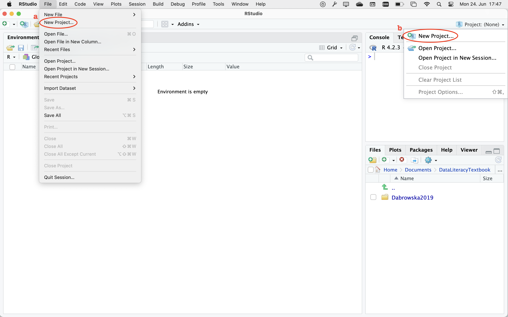

Importing data in R
Chapter overview
Many R textbooks postpone this section until much later. This is because they include practical tasks that typically rely on datasets that are directly accessible as R data objects. In real life, however, research data rarely comes neatly packaged as an R object. Your data will most likely be stored in a spreadsheet table or as a set of text files. And they will be more messy that you would like to admit…
This chapter will take you through the process of:
- Downloading data from a real applied linguistics study
- Creating a Project in RStudio
- Importing a dataset as an
Robject - Saving this
Robject for future use
In future chapters, we will continue to work with this data and will learn how to “clean it up” for data analysis.
Accessing data from a real applied linguistics study
As we saw in Chapter *, it is good practice to share both the data and materials associated with research studies so that others can reproduce and replicate the research.
In the following chapters, we will focus on data associated with the following study:
Dąbrowska, Ewa. 2019. Experience, Aptitude, and Individual Differences in Linguistic Attainment: A Comparison of Native and Nonnative Speakers. Language Learning 69(S1). 72–100. https://doi.org/10.1111/lang.12323.

Follow the DOI1 link above and read the abstract to find out what the study was about. You do not need to have institutional or paid access to the full paper to read the abstract.
Quiz questions
1) What kind of data was collected as part of this study? (check boxes, all of which are true)
- Participants' results on a grammar test
- Participants' resuls on a vocabulary test
- Participants' resuls on a collocations test
- Sociodemograhic information about the participants including their age and level of education
- Participants' results on a language analytic ability test
- Participants' results on a nonverbal intelligence test
2) On average, how did the English L2 speakers fare compared to the native speakers? a. On average, L2 speakers performed better on grammar tasks than native speakers. b. On average, native speakers outperformed L2 speakers on all language tasks, with the most significant difference observed in collocation tasks. c. On average, both groups performed equally well on grammar and vocabulary tasks. d. The observed differences in performance between native speakers and L2 speakers were not statistically significant.
3) In this study, did all native speakers perform better in the English vocabularly and grammar tests than the L2 speakers? a. Yes, the L1 speakers clearly outperformed L2 speakers in grammar and vocabulary. b. No, while L1 speakers generally performed better, some L2 speakers demonstrated equally high proficiency in grammar and vocabulary. c. This study only looked at average trends so that no conclusive statement can be made about any individual participants.Though this publication does have an Open Data badge (see *), the author has made the data used in this study available on an open repository. To find out on which repository, go back to the DOI link and click on the drop-down menu “Supporting Information”. It contains a link to a PDF file. Click on the link and scroll to the last page which contains the following information about the data associated with Dąbrowska (2019):
Appendix S4: Datasets
Dąbrowska, E. (2018). L1 data [Data set]. Retrieved from https://www.iris-database.org/iris/app/home/detail?id=york:935513
Dąbrowska, E. (2018). L2 data [Data set]. Retrieved from https://www.iris-database.org/iris/app/home/detail?id=york:935514
Quiz question
4\) On which repository/repositories can the data be found? a. Zenodo b. database.org c. IRIS d. ResearchGate e. All of the above. Hint: Check the links listed in Appendix S4.Click on the two links listed in Appendix S4 and download the two datasets. Save them in an appropriate place on your computer (see Chapter *), as we will continue to work with these two files in the following chapters.
If you haven’t already done so, I suggest that you create a folder in which you save everything that you create whilst learning from this textbook. This folder could be called something along the lines of DataLiteracyTextbook, 2024_data_literacy, or LeFoll_2024_DataLiteracy. Then, within this folder, I recommend that you create another folder called Dabrowska2019 (note how I have not included the “ą” character in the folder name as this could cause problems), and within this folder, create another folder called data. This is the folder in which you can save these two files.
Quiz question
6\) In which data format are these two files saved? a. They are both .csv files. b. They are both .txt files. c. They are both .html files. c. They are both .xslx files.Below are the first five lines of the file Dabrowska_2018_L1_data.csv, which contains the data about the study’s L1 participants.
Participant,Age,Gender,Occupation,OccupGroup,OtherLgs,Education,EduYrs,ReadEng1,ReadEng2,ReadEng3,ReadEng,Active,ObjCl,ObjRel,Passive,Postmod,Q.has,Q.is,Locative,SubCl,SubRel,GrammarR,Grammar,VocabR,Vocab,CollocR,Colloc,Blocks,ART,LgAnalysis
1,21,M,Student,PS,None,3rd year of BA,17,1,2,2,5,8,8,8,8,8,8,6,8,8,8,78,95,48,73.33333333,30,68.75,16,17,15
2,38,M,Student/Support Worker,PS,None,NVQ IV Music Performance,13,1,2,3,6,8,8,8,8,8,8,7,8,8,8,79,97.5,58,95.55555556,35,84.375,11,31,13
3,55,M,Retired,I,None,No formal (City and Guilds),11,3,3,4,10,8,8,8,8,8,7,8,8,8,8,79,97.5,58,95.55555556,31,71.875,5,38,5
4,26,F,Web designer,PS,None,BA Fine Art,17,3,3,3,9,8,8,8,8,8,8,8,8,8,8,80,100,53,84.44444444,37,90.625,20,26,15This file is a delimiter-separated values (DSV) file.
Quiz question
7\) Which character is used to separate the values in this DSV file? a. comma b. tab c. semi-colon d. colon e. spaceUsing Projects in RStudio
One of the advantages of working with RStudio is that it allows us to harness the potential of Projects. RStudio Projects help us to keep our digital kitchen nice and tidy. Each project has its own directory, environment, and history which means that we can work on multiple projects at the same time and RStudio will keep them completely separate from each other. This means that we can easily switch between cooking different dishes, say a gluten-free egg curry and vegan pancakes, without fear of accidentally setting the wrong temperature on the cooker or contaminating either dishes.
But even if you don’t like multi-tasking (which is not recommended), RStudio Projects are a great way to help you keep together all the data, scripts, and outputs associated with a single project in an organised manner. In the long run, this will make your life much, much easier. It will also be an absolute lifesafer as soon as you need to share your work with others (e.g., your supervisor, colleague, reviewer, etc.).
To create a new Project, open RStudio. Select “File”, then “New Project…”. Alternatively, you can click on the Project button in the top-right corner of RStudio and then select “New Project…” (To do for Jan: add screenshot showing this second option).
Both options will open up a window with three options for creating a new project:
- New Directory (which allows you to create an entirely new project for which you do not yet have a folder on your computer)
- Existing Directory (which allows you to create a project in an existing folder associated with your project)
- Version Control (see Bryan (n.d.)).
Given that you already saved the data that we want to import (from Dąbrowska (2019)) in a dedicated folder on your computer, you can select the second option: “Existing Directory”.
This will open up the following window. Click on “Browse…” to navigate to the folder corresponding to your Dąbrowska (2019) project. If you followed my suggestions earlier on, this would be a folder called something along the lines of: Dabrowska2019. Once you have selected this project folder on your computer, select the option “Open in a new session” and then click on “Create Project”.

DataLiteracyTextbook”). The checkbox should be ticked and red ellipses should circle the buttons that need to be clicked “Browse”, “tickbox” and “Create project”. Alt-text needs to be adjusted.)Creating an RStudio project will have generated a new file in your folder project called Dabrowska2019.Rproj. You can see it in the Files pane of RStudio (To for Jan: add screenshot showing this). Note that its file extension is .Rproj. Such .Rproj files contain information about your project options, which, in most cases, you will not need to edit.
More usefully, .Rproj files can be used as shortcuts for opening your projects. Shut down RStudio. Then, in your computer file system, navigate to your project folder, e.g., in a File Explorer window on Windows and a Finder window on macOS, to locate your .Rproj file. Double-click on the file to automatically launch RStudio with all the correct settings for this particular project. Alternatively, you can use the Project button to open up a project from RStudio itself.
The folder in which in the .Rproj file was created is your project’s working directory. You can see the path to this working directory at the top of the Console pane in RStudio (To do for Jan: Add ellipse on screenshot). The Files pane should also show the content of this directory. Click on the “New Folder” icon in your Files pane (To do for Jan: Add ellipse on screenshot) to create a new subfolder called analysis.
Your folder Dabrowska2019 should now contain an .RProj file and two subfolders called analysis and data. Click on the analysis folder to open it and then click on “New Script” icon (To do for Jan: Add ellipse on second screenshot) and select “R Script”. This will open a new, empty R script in your Source pane. It is best to always begin by saving a newly created file. Save this empty script with a computer- and human-friendly file name such as as 1_DataImport.R.
Given that we want to import two .csv files, we are going to need to use the base R function read.csv(). You can find out what this function does by typing ?read.csv or help(read.csv) in the Console to open up the documentation. This help file contains information about several functions used to import data. Scroll down to the information about the read.csv() function. It reads:
read.csv(file, header = TRUE, sep = ",", quote = "\"",
dec = ".", fill = TRUE, comment.char = "", ...)This informs us that this function’s first argument is the path to the file from which we want to import the data. It is the only argument that does not have a default value and is therefore the only argument that is compulsory.
In theory, therefore, all we need to write to import the data is:
L1.data <- read.csv(file = "data/Dabrowska_2018_L1_data.csv")The file path "data/Dabrowska_2018_L1_data.csv" informs R that the data is located in a subfolder of the project’s working directory called data and that, within this subfolder, the file that we want to import is called Dabrowska_2018_L1_data.csv.
In practice, however, it is often safest to spell things out to remind ourselves of some of the default settings of the function in case they need changing:
L1.data <- read.csv(file = "data/Dabrowska_2018_L1_data.csv",
header = TRUE,
sep = ",",
quote = "\"",
dec = ".")Quick-and-dirty ways to import data in R
Hardcoding file paths in R scripts
Copy-and-paste path
Loading data using RStudio
References
Footnotes
“Digital Object Identifiers (DOI) are alpha-numeric strings that can be assigned to any entity, including: publications (including preprints), materials, datasets, and feature films - the use of DOIs is not restricted to just scholarly or academic material. DOIs “provides a system for persistent and actionable identification and interoperable exchange of managed information on digital networks.” (https://doi.org/hb.html). There are many different DOI registration agencies that operate DOIs, but the two that researchers would most likely encounter are Crossref and Datacite.” (Parsons et al. 2022)↩︎